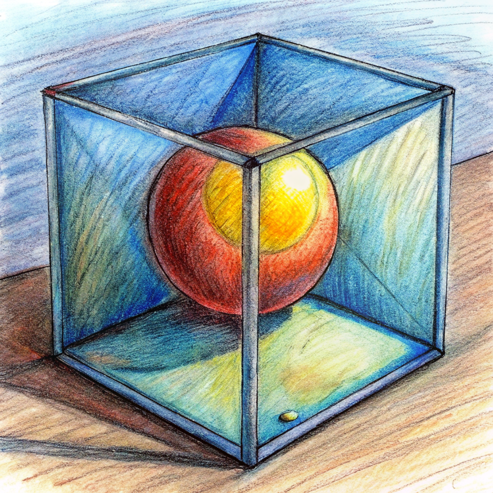
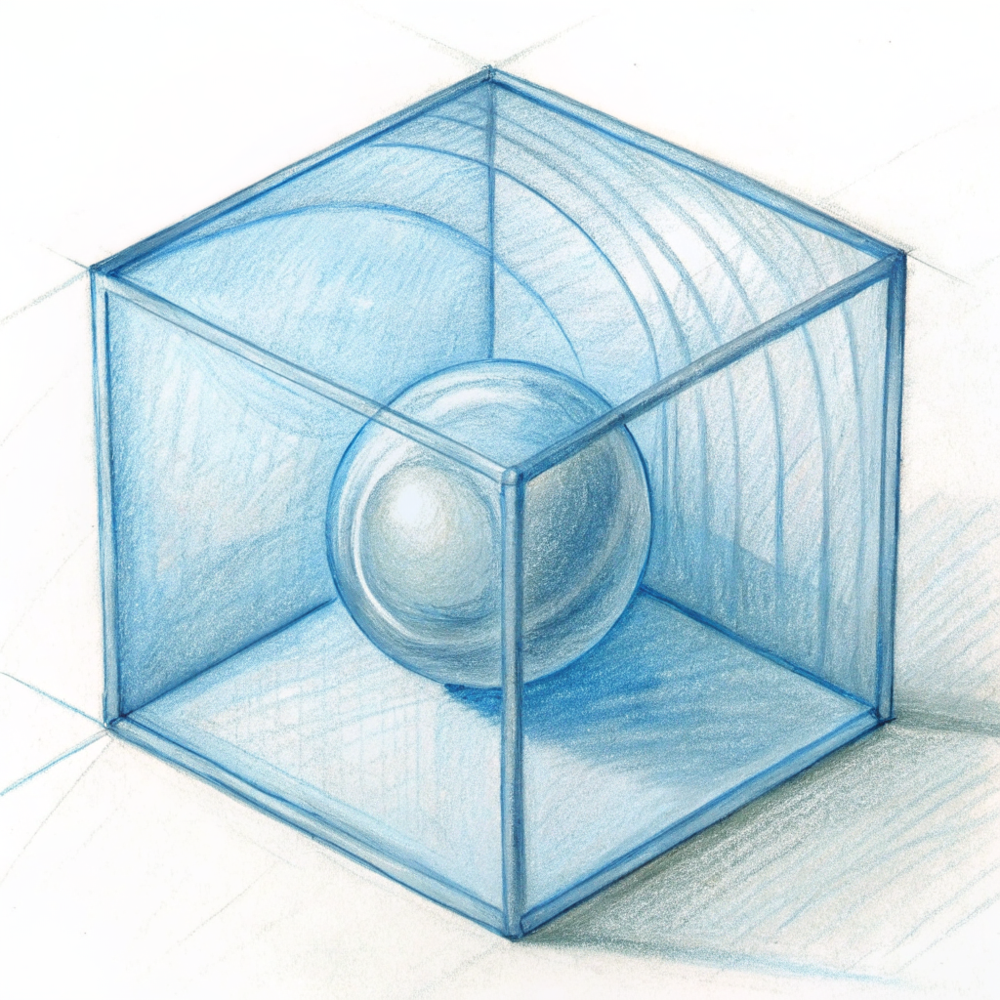
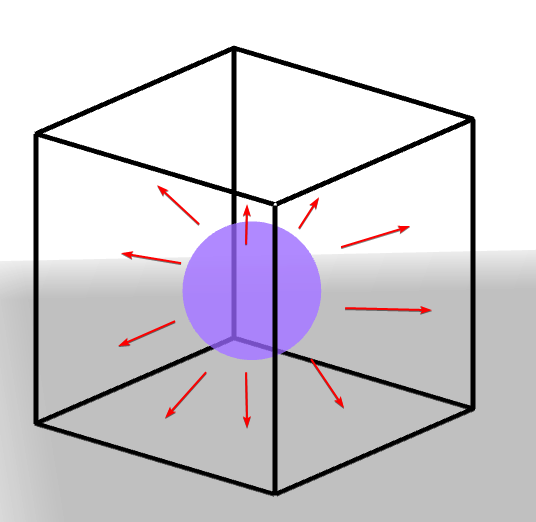
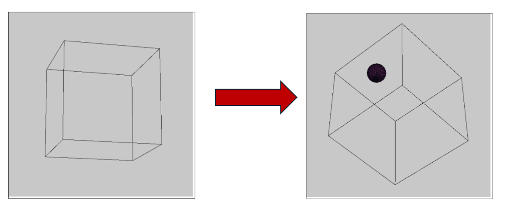

Modelado básico 3D
En este ejercicio debes simular un cubo con una esfera dentro de este. Actualmente, la esfera sale del
cubo 😓😓.
Tu misión es utilizar tus conocimientos para que la esfera colisione con el cubo y
pueda rebotar dentro de este.
Explicación


La simulación que se presenta muestra la colisión entre una esfera móvil y un cubo estático en un
entorno tridimensional, lo que ofrece una experiencia interactiva fascinante. Este programa, creado con
la biblioteca p5.js, utiliza las habilidades de renderización 3D para crear un lienzo virtual en el que
una esfera navega por el espacio a una velocidad aleatoria y responde dinámicamente a las interacciones
con las diferentes caras del cubo.
Al simular el comportamiento físico de la esfera dentro del cubo mediante la constante actualización
de su posición y la detección precisa de colisiones, el código subyacente a esta simulación crea una
experiencia visual cautivadora y educativa.
Antes de comenzar a implementar esta simulación, se deben establecer tres variables globales
fundamentales: la posición de la esfera, la velocidad de la esfera y las dimensiones del cubo.
La posición de la esfera se almacena en un objeto llamado spherePos en el espacio virtual. Este
objeto almacena las coordenadas de la esfera en tres dimensiones. La posición se establece inicialmente
en el centro de la esfera, es decir, en el punto (0, 0, 0).
El vector sphereSpeed es utilizado para calcular la velocidad de la esfera. La función
p5.Vector.random3D() se utiliza para generar este vector, que proporciona una dirección aleatoria para
el movimiento de la esfera. Para proporcionar una experiencia de simulación más controlada y realista,
la magnitud del vector se multiplica por 0,9 después.
Finalmente, se utiliza una variable de inicialización de 70 unidades para determinar las dimensiones
del cubo dentro del cual se desenvuelve la esfera. Esta medida mide el tamaño del cubo en el espacio
tridimensional y establece los límites dentro de los cuales la esfera puede moverse y colisionar.
Estas variables en conjunto y cómo se utilizan en la simulación permiten crear una experiencia
interactiva envolvente que no solo cautiva visualmente, sino que también enseña los principios físicos
fundamentales de la dinámica de colisiones en un entorno tridimensional.

Variables Globales
- spherePos: Es un objeto que almacena la posición de la esfera en el espacio tridimensional. Inicialmente, se encuentra en el centro del espacio, en las coordenadas (0, 0, 0).
- sphereSpeed: Representa la velocidad de la esfera. Se inicializa como un vector aleatorio en tres dimensiones utilizando p5.Vector.random3D(), lo que significa que su dirección es aleatoria, pero su magnitud es 1. Luego, este vector se multiplica por 0.9 para reducir su velocidad.
- boxSize: Define el tamaño del cubo en el que se encuentra la esfera. Este valor se establece en 70 unidades.
Función setup()
- Esta función se llama una vez al principio del programa. Dentro de esta función, se define el lienzo utilizando createCanvas(), creando un lienzo de 600x600 píxeles con una vista en perspectiva (WEBGL).
- La función perspective() establece la perspectiva de la escena tridimensional. Toma cuatro argumentos: el campo de visión (en radianes), la relación de aspecto (en este caso, 1 para una relación de aspecto cuadrada), el plano cercano y el plano lejano de la escena.
Función draw()
- Esta función se ejecuta continuamente después de setup(), representando cada cuadro en la animación.
- background(200) establece el color de fondo del lienzo en gris claro en cada cuadro, eliminando el contenido anterior.
- orbitControl() habilita el control de órbita, lo que permite al usuario rotar la vista de la escena utilizando el ratón.
- rotateX() y rotateY() rotan la escena según el número de cuadros (frameCount) multiplicado por una pequeña cantidad. Esto crea una animación de rotación continua de la escena.
- La posición de la esfera se actualiza sumando la velocidad actual de la esfera en cada cuadro, lo que le permite moverse a través del espacio.
- Se verifica si la esfera colisiona con el cubo. Esto se hace iterando sobre las seis caras del cubo y calculando la distancia entre el centro de la esfera y el centro de cada cara del cubo. Si la distancia es menor o igual a 10 unidades (considerada la "zona de colisión"), se ejecuta una colisión.
- Si hay una colisión, se calcula el vector normal de la cara del cubo con la que colisiona la esfera. Se utiliza este vector normal para reflejar la velocidad de la esfera, como si estuviera rebotando en la superficie del cubo.
- Además, se verifica si la esfera está chocando con los bordes del cubo. Si lo hace, su velocidad se invierte para simular una colisión elástica.
- Finalmente, se dibuja un cubo transparente utilizando box() y se dibuja la esfera dentro del cubo con sphere(). La función fill() establece el color de la esfera.
En cada frame, la posición de la esfera se actualiza sumando su velocidad actual a su posición anterior.
El objetivo de este procedimiento es simular el movimiento continuo de una esfera a través del espacio
tridimensional definido por un cubo estático.
Después de ajustar la posición de la esfera, se verifica si se encuentra en contacto con el cubo.
Para lograrlo, se realiza una prueba de colisión con cada cara del cubo. Se considera que ha ocurrido
una colisión entre la esfera y la cara del cubo si la esfera se encuentra a una distancia menor o igual
a 10 unidades de la cara.
Se calcula el vector normal de la cara con la que colisiona la esfera para reflejar esta colisión.
Este vector normal muestra la dirección que está perpendicular a la superficie del cubo. Luego, este
vector normal se utiliza para actualizar la velocidad de la esfera para reflejar el impacto de la
colisión. Esto se logra aplicando una transformación a la velocidad de la esfera utilizando principios
de física como la ley de reflexión para simular cómo la esfera rebotaría después de golpear una
superficie.
Además, si la esfera sale del cubo en algún momento, su velocidad cambiará de dirección. Esta
comprobación garantiza que la esfera permanezca dentro de los límites del cubo y no salga del espacio de
simulación.
Intente realizar lo siguiente en el programa a continuación:
- Intente simular la colisión de la esfera con el cubo.

Aquí te dejamos algunos pasos para lograrlo😎😎:
- Calcular el vector normal de la cara de colisión: Después de verificar la colisión entre la esfera y el cubo, calcula el vector normal de la cara del cubo con la que colisiona la esfera.
- Reflejar la velocidad de la esfera: Utiliza el vector normal calculado para reflejar la velocidad de la esfera como si estuviera rebotando en la superficie del cubo.
Recuerda: siempre puedes restaurar el programa original oprimiendo el botón Restaurar.